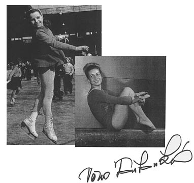

Vera Caslavska (CSSR)
1964 and 1968 Olympic AA Champion
1966 World AA Champion
1965 and 1967 European AA Champion

Medal Total
Olympic
Games:
7 Gold, 4 Silver
World Championships: 4 Gold, 5 Silver, 1 Bronze
European Championships:
11 Gold, 1 Silver, 2 Bronze
Caslavska was born on May 3, 1942. She began her sports career as a figure skater but switched to gymnastics. Caslavska has to be considered one of the best gymnasts of all time, due to her long and successful career. After retiring from the sport in 1968, she wanted to work as a coach but for many years was not allowed to because she was a supporter of the 'Prague Spring.' Eventually she was allowed to coach; one of her pupils was Iveta Polokova. Caslavska became a member of the IOC in 1995. She was inducted into the Intl. Women's Sports Hall of Fame in 1991 and was awarded the Czech Republic's Medal of Merit in 1995. She died on August 30, 2006 in Prague.
Competition Results
1957
Jr. Championships of the Republic: 1st AA
1958
CSSR Championships: 2nd AA
World Championships: 2nd Team, 8th AA
1959
CSSR Championships: 3rd AA, 1st V, 2nd UB, 2nd B, 2nd FX
European Championships: 8th AA, 1st FX, 2nd
V
1960
CSSR Championships: 2nd AA
CSSR Spartakiade: 1st AA, 1st B, 1st FX
Olympics: 2nd Team, 8th AA, 6th B
1961
CSSR Championships: 1st AA, 1st V, 1st UB
CSSR-GDR Dual Meet: 1st Team, 4th AA, 2nd V, 3rd FX
European Championships: 3rd AA, 3rd FX,
5th UB, 6th V, 6th B
1962
CSSR Championships: 1st AA, 1st V, 1st UB, 1st B, 1st FX
CSSR-GDR-UKR Meet: 1st Team, 1st AA
Tblisi International: 1st AA
World Championships: 2nd Team, 2nd AA,
1st V, 3rd FX, 5th UB, 5th B
1963
JPN-CSSR Dual Meet: 1st Team, 1st AA
1964
CSSR Championships: 1st AA, 1st V, 1st UB, 1st B, 1st FX
CSSR-GDR Dual Meet: 1st Team, 1st AA
Olympics: 2nd Team, 1st AA, 1st
V, 1st B, 5th UB, 6th FX
USA-CSSR Dual Meet: 1st Team, 1st AA
1965
CSSR Spartakiade: 1st AA, 1st V, 1st UB, 1st B, 1st FX
European Championships: 1st AA, 1st V,
1st UB, 1st B, 1st FX
1966
CSSR Championships: 1st AA
HUN-CSSR-GBR Tri-Meet: 1st AA, 1st V, 1st UB, 1st B, 1st FX
FRG-CSSR Dual Meet: 1st Team, 1st AA
World Championships: 1st Team, 1st AA, 1st
V, 2nd B, 2nd FX, 4th UB
1967
CSSR Championships: 1st AA, 1st V, 1st UB, 1st B, 1st FX
European Championships: 1st AA, 1st V,
1st UB, 1st B, 1st FX
1968
CSSR Championships: 1st AA, 1st V, 1st UB, 1st B, 1st FX
Olympics: 2nd Team, 1st AA, 1st
V, 1st UB, 1st FX, 2nd B
This page was created on March 12, 2000 and was last
updated on January 23, 2021.
© Gymn Forum